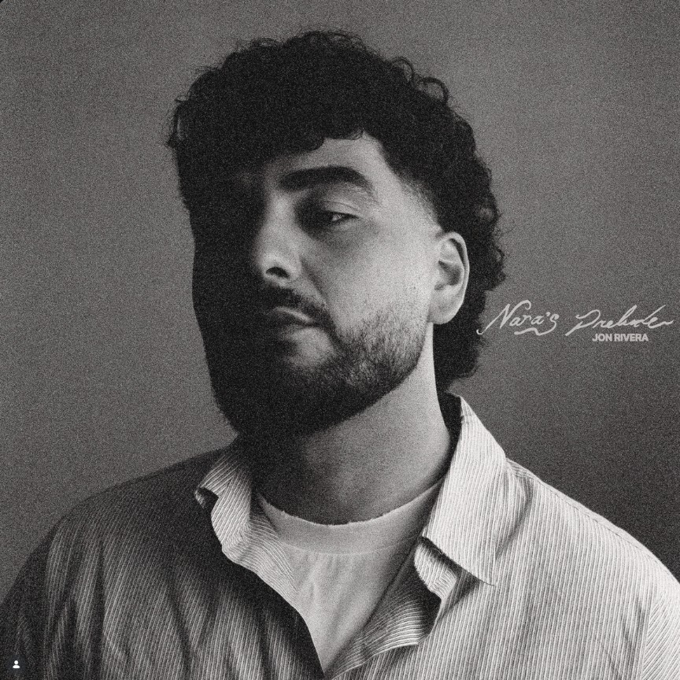

Highs & Lows
(01)
The Story
(Jon Rivera)
The Story
Moving between footage of Jon’s teenage years and his present-day self, this music video explores the highs and lows of becoming: letting go of an old identity, stepping beyond familiar routines, and finding the confidence to grow into the man he wants to be. His sister accompanies him as a representation of the women, art and creativity that help shape his journey, while dancing gives physical expression to his transformation. The story is told through a continuous dolly shot, marking the passage between who he was and who he is becoming.
